Gratis
För ett lag eller en klass.
0 krAlltid
- 1–3 försäljningar samtidigt
- Klubbens eller skolans märke
- Guider om lagförsäljning

Pris
Ni betalar för verktyget, aldrig per köp. Skramlat tar aldrig del av betalningen, och pengarna swishas direkt till laget eller skolan.
För ett lag eller en klass.
För en klubb eller skola med flera lag.
För en större klubb.
En försäljning som pågår, till exempel P2015 Kanelbullar. Avslutade försäljningar räknas inte, så samma lag kan sälja många gånger om året.
Nej. Föräldrarna swishar direkt till laget eller skolan, och Skramlat tar aldrig del av betalningen.
Bas kostar 999 kr och Plus 1 999 kr per år, exklusive moms. Ni betalar med en faktura om året, så att styrelsen bara behöver godkänna det en gång. Pilotklubbar använder Skramlat gratis under pilotåret.
Ni får besked i god tid och väljer själva om ni vill fortsätta med Bas eller Plus. Gratisnivån finns kvar.